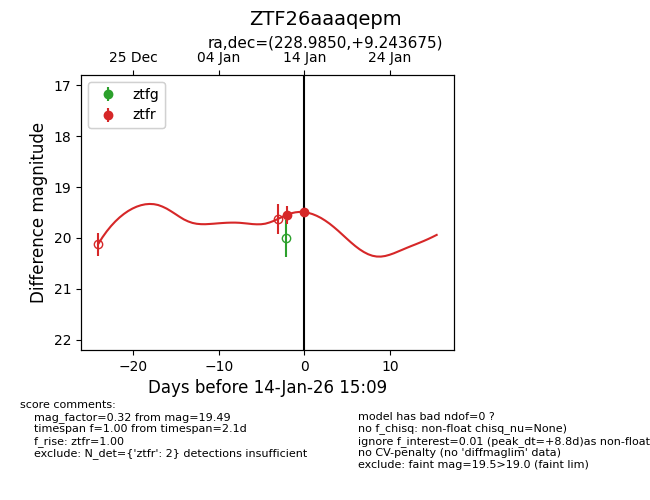
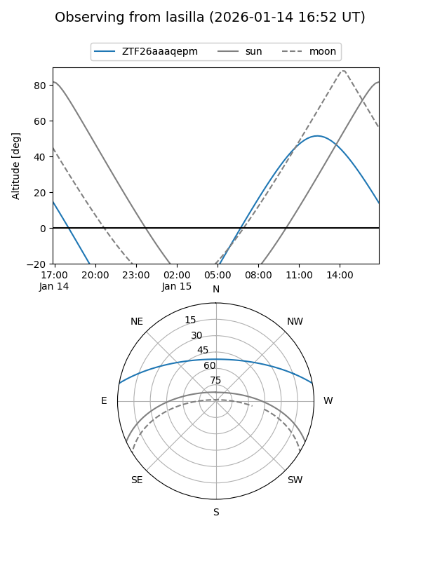
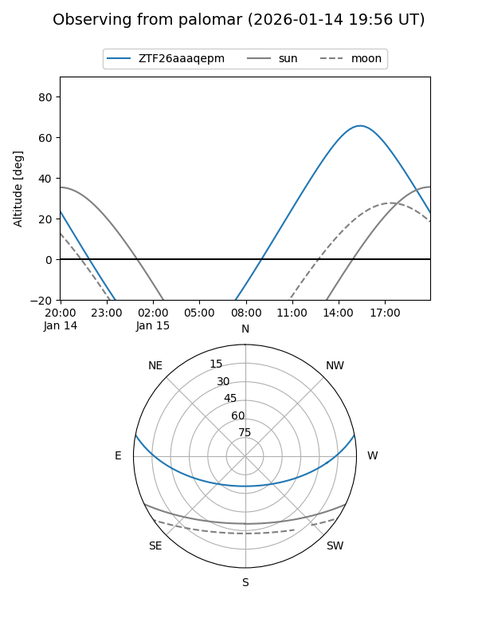
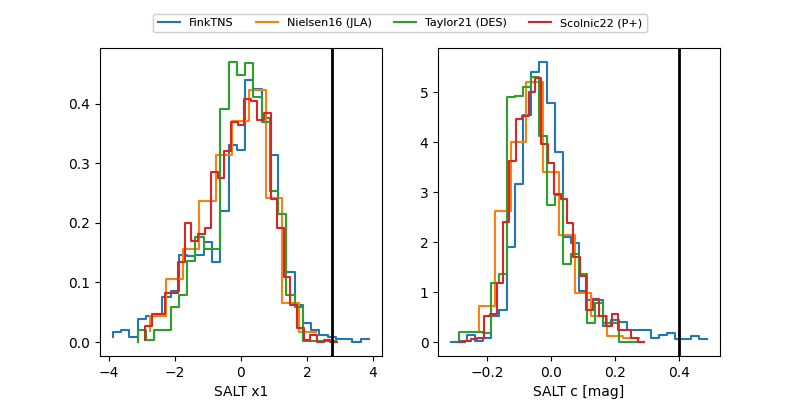

ZTF26aaaqepm
Target ZTF26aaaqepm at 2026-01-16 13:05
Aliases and brokers:
FINK: link
Lasair: link
ALeRCE: link
alt names
ZTF26aaaqepm (ztf,fink_ztf)
Coordinates:
equatorial (ra, dec) = 228.9850,+9.24367
equatorial (HMS+DMS) = 15:15:56.41,+09:14:37.23
galactic (l, b) = (12.1731,+51.51568)
Flags:
Photometry:
last ztfr=19.49
3 ztfr detections
Lightcurve

Visibility


Additional plots
